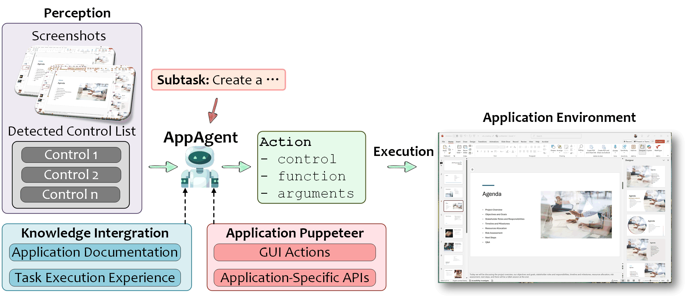

AppAgent: Application Execution Agent
AppAgent is the core execution runtime in UFO, responsible for carrying out individual subtasks within a specific Windows application. Each AppAgent functions as an isolated, application-specialized worker process launched and orchestrated by the central HostAgent.
What is AppAgent?

AppAgent operates as a child agent under the HostAgent's orchestration:
- Isolated Runtime: Each AppAgent is dedicated to a single Windows application
- Subtask Executor: Executes specific subtasks delegated by HostAgent
- Application Expert: Tailored with deep knowledge of the target app's API surface, control semantics, and domain logic
- Hybrid Execution: Leverages both GUI automation and API-based actions through MCP commands
Unlike monolithic Computer-Using Agents (CUAs) that treat all GUI contexts uniformly, each AppAgent is tailored to a single application and operates with specialized knowledge of its interface and capabilities.
Core Responsibilities
| Responsibility | Description | Example |
|---|---|---|
| State Sensing | Capture application UI, detect controls, understand current state | Screenshot Word window → Detect 50 controls → Annotate UI elements |
| Reasoning | Analyze state and determine next action using LLM | "Table visible with Export button [12] → Click to export data" |
| Action Execution | Execute GUI clicks or API calls via MCP commands | click_input(control_id=12) or execute_word_command("export_table") |
| Result Reporting | Write execution results to shared Blackboard | Write extracted data to subtask_result_1 for HostAgent |
ReAct-Style Control Loop
Upon receiving a subtask and execution context from the HostAgent, the AppAgent initializes a ReAct-style control loop where it iteratively:
- Observes the current application state (screenshot + control detection)
- Thinks about the next step (LLM reasoning)
- Acts by executing either a GUI or API-based action (MCP commands)
The MCP command system enables reliable control over dynamic and complex UIs by favoring structured API commands whenever available, while retaining fallback to GUI-based interaction commands when necessary.
Execution Architecture
Finite State Machine
AppAgent uses a finite state machine with 7 states to control its execution flow:
- CONTINUE: Continue processing the current subtask
- FINISH: Successfully complete the subtask
- ERROR: Encounter an unrecoverable error
- FAIL: Fail to complete the subtask
- PENDING: Wait for user input or clarification
- CONFIRM: Request user confirmation for sensitive actions
- SCREENSHOT: Capture and re-annotate the application screenshot
State Details: See State Machine Documentation for complete state definitions and transitions.
4-Phase Processing Pipeline
Each execution round follows a 4-phase pipeline:
Strategy Details: See Processing Strategy Documentation for complete pipeline implementation.
Hybrid GUI–API Execution
AppAgent executes actions through the MCP (Model-Context Protocol) command system, which provides a unified interface for both GUI automation and native API calls:
# GUI-based command (fallback)
command = Command(
tool_name="click_input",
parameters={"control_id": "12", "button": "left"}
)
await command_dispatcher.execute_commands([command])
# API-based command (preferred when available)
command = Command(
tool_name="word_export_table",
parameters={"format": "csv", "path": "output.csv"}
)
await command_dispatcher.execute_commands([command])
Implementation: See Hybrid Actions for details on the MCP command system.
Knowledge Enhancement
AppAgent is enhanced with Retrieval Augmented Generation (RAG) from heterogeneous sources:
| Knowledge Source | Purpose | Configuration |
|---|---|---|
| Help Documents | Application-specific documentation | Learning from Help Documents |
| Bing Search | Latest information and updates | Learning from Bing Search |
| Self-Demonstrations | Successful action trajectories | Experience Learning |
| Human Demonstrations | Expert-provided workflows | Learning from Demonstrations |
Knowledge Substrate Overview: See Knowledge Substrate for the complete RAG architecture.
Command System
AppAgent executes actions through the MCP (Model-Context Protocol) command system:
Application-Level Commands:
capture_window_screenshot- Capture application windowget_control_info- Detect UI controls via UIA/OmniParserclick_input- Click on UI controlset_edit_text- Type text into input fieldannotation- Annotate screenshot with control labels
Command Details: See Command System Documentation for complete command reference.
Control Detection Backends
AppAgent supports multiple control detection backends for comprehensive UI understanding:
UIA (UI Automation):
Native Windows UI Automation API for standard controls
- ✅ Fast and accurate
- ✅ Works with most Windows applications
- ❌ May miss custom controls
OmniParser (Visual Detection):
Vision-based grounding model for visual elements
- ✅ Detects icons, images, custom controls
- ✅ Works with web content
- ❌ Requires external service
Hybrid (UIA + OmniParser):
Best of both worlds - maximum coverage
- ✅ Native controls + visual elements
- ✅ Comprehensive UI understanding
Control Detection Details: See Control Detection Overview.
Input and Output
AppAgent Input
| Input | Description | Source |
|---|---|---|
| User Request | Original user request in natural language | HostAgent |
| Sub-Task | Specific subtask to execute | HostAgent delegation |
| Application Context | Target app name, window info | HostAgent |
| Control Information | Detected UI controls with labels | Data collection phase |
| Screenshots | Clean, annotated, previous step images | Data collection phase |
| Blackboard | Shared memory for inter-agent communication | Global context |
| Retrieved Knowledge | Help docs, demos, search results | RAG system |
AppAgent Output
| Output | Description | Consumer |
|---|---|---|
| Observation | Current UI state description | LLM context |
| Thought | Reasoning about next action | Execution log |
| ControlLabel | Selected control to interact with | Action executor |
| Function | MCP command to execute (click_input, set_edit_text, etc.) | Command dispatcher |
| Args | Command parameters | Command dispatcher |
| Status | Agent state (CONTINUE, FINISH, etc.) | State machine |
| Blackboard Update | Execution results | HostAgent |
Example Output:
{
"Observation": "Word document with table, Export button at [12]",
"Thought": "Click Export to extract table data",
"ControlLabel": "12",
"Function": "click_input",
"Args": {"button": "left"},
"Status": "CONTINUE"
}
Related Documentation
Detailed Documentation:
- State Machine: Complete FSM with state definitions and transitions
- Processing Strategy: 4-phase pipeline implementation details
- Command System: Application-level MCP commands reference
Core Features:
- Hybrid Actions: MCP command system for GUI–API execution
- Control Detection: UIA and visual detection
- Knowledge Substrate: RAG system overview
Tutorials:
- Creating AppAgent: Step-by-step guide
- Help Document Provision: Add help docs
- Demonstration Provision: Add demos
- Wrapping App-Native API: Integrate APIs
API Reference
Bases: BasicAgent
The AppAgent class that manages the interaction with the application.
Initialize the AppAgent.
| Parameters: |
|
|---|
Source code in agents/agent/app_agent.py
48 49 50 51 52 53 54 55 56 57 58 59 60 61 62 63 64 65 66 67 68 69 70 71 72 73 74 75 76 77 78 79 80 81 82 83 84 85 86 87 | |
default_state
property
Get the default state.
mode
property
Get the mode of the session.
status_manager
property
Get the status manager.
tools_info
property
writable
Get the tools information.
| Returns: |
|
|---|
build_experience_retriever(db_path)
Build the experience retriever.
| Parameters: |
|
|---|
| Returns: |
|
|---|
Source code in agents/agent/app_agent.py
434 435 436 437 438 439 440 441 442 | |
build_human_demonstration_retriever(db_path)
Build the human demonstration retriever.
| Parameters: |
|
|---|
| Returns: |
|
|---|
Source code in agents/agent/app_agent.py
444 445 446 447 448 449 450 451 452 | |
build_offline_docs_retriever()
Build the offline docs retriever.
Source code in agents/agent/app_agent.py
416 417 418 419 420 421 422 | |
build_online_search_retriever(request, top_k)
Build the online search retriever.
| Parameters: |
|
|---|
Source code in agents/agent/app_agent.py
424 425 426 427 428 429 430 431 432 | |
context_provision(request='', context=None)
async
Provision the context for the app agent.
| Parameters: |
|
|---|
Source code in agents/agent/app_agent.py
454 455 456 457 458 459 460 461 462 463 464 465 466 467 468 469 470 471 472 473 474 475 476 477 478 479 480 481 482 483 484 485 486 487 488 489 490 491 492 493 494 | |
demonstration_prompt_helper(request)
Get the examples and tips for the AppAgent using the demonstration retriever.
| Parameters: |
|
|---|
| Returns: |
|
|---|
Source code in agents/agent/app_agent.py
220 221 222 223 224 225 226 227 228 229 230 231 232 233 234 235 236 237 238 239 240 241 242 243 244 | |
external_knowledge_prompt_helper(request, offline_top_k, online_top_k)
Retrieve the external knowledge and construct the prompt.
| Parameters: |
|
|---|
| Returns: |
|
|---|
Source code in agents/agent/app_agent.py
246 247 248 249 250 251 252 253 254 255 256 257 258 259 260 261 262 263 264 265 266 267 268 269 270 271 272 273 274 275 276 277 278 279 280 281 282 283 284 285 286 287 288 289 290 291 292 293 294 295 | |
get_prompter(is_visual, main_prompt, example_prompt)
Get the prompt for the agent.
| Parameters: |
|
|---|
| Returns: |
|
|---|
Source code in agents/agent/app_agent.py
89 90 91 92 93 94 95 96 97 98 99 100 101 102 | |
message_constructor(dynamic_examples, dynamic_knowledge, image_list, control_info, prev_subtask, plan, request, subtask, current_application, host_message, blackboard_prompt, last_success_actions, include_last_screenshot)
Construct the prompt message for the AppAgent.
| Parameters: |
|
|---|
| Returns: |
|
|---|
Source code in agents/agent/app_agent.py
104 105 106 107 108 109 110 111 112 113 114 115 116 117 118 119 120 121 122 123 124 125 126 127 128 129 130 131 132 133 134 135 136 137 138 139 140 141 142 143 144 145 146 147 148 149 150 151 152 153 154 155 156 157 158 159 160 161 162 163 | |
print_response(response, print_action=True)
Print the response using the presenter.
| Parameters: |
|
|---|
Source code in agents/agent/app_agent.py
210 211 212 213 214 215 216 217 218 | |
process(context)
async
Process the agent.
| Parameters: |
|
|---|
Source code in agents/agent/app_agent.py
368 369 370 371 372 373 374 375 376 377 378 379 380 381 382 383 384 385 | |
process_confirmation()
Process the user confirmation.
| Returns: |
|
|---|
Source code in agents/agent/app_agent.py
387 388 389 390 391 392 393 394 395 396 397 398 399 400 | |
rag_demonstration_retrieve(request, demonstration_top_k)
Retrieving demonstration examples for the user request.
| Parameters: |
|
|---|
| Returns: |
|
|---|
Source code in agents/agent/app_agent.py
334 335 336 337 338 339 340 341 342 343 344 345 346 347 348 349 350 351 352 353 354 355 356 357 358 359 360 361 362 363 364 365 366 | |
rag_experience_retrieve(request, experience_top_k)
Retrieving experience examples for the user request.
| Parameters: |
|
|---|
| Returns: |
|
|---|
Source code in agents/agent/app_agent.py
297 298 299 300 301 302 303 304 305 306 307 308 309 310 311 312 313 314 315 316 317 318 319 320 321 322 323 324 325 326 327 328 329 330 331 332 | |
Summary
AppAgent Key Characteristics:
✅ Application-Specialized Worker: Dedicated to single Windows application
✅ ReAct Control Loop: Iterative observe → think → act execution
✅ Hybrid Execution: GUI automation + API calls via MCP commands
✅ 7-State FSM: Robust state management for execution control
✅ 4-Phase Pipeline: Structured data collection → reasoning → action → memory
✅ Knowledge-Enhanced: RAG from docs, demos, and search
✅ Orchestrated by HostAgent: Child agent in hierarchical architecture
Next Steps:
- Deep Dive: Read State Machine and Processing Strategy for implementation details
- Learn Features: Explore Core Features for advanced capabilities
- Hands-On Tutorial: Follow Creating AppAgent guide